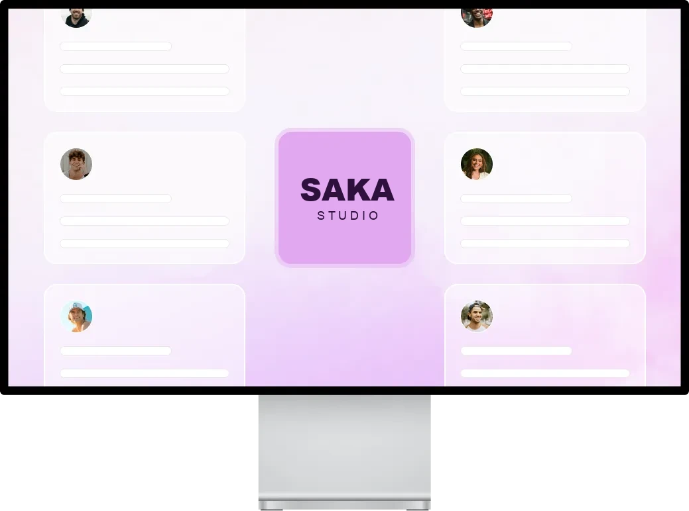

Stop Losing 20+ Hours Per Week to Administrative Work
Automate It in 30 Days or Your Money Back. The Operations Audit + Automation Blueprint identifies and eliminates the manual busywork stealing your billable hours guaranteed to save 20+ hours weekly or you don’t pay.
The Three Problems Killing Your Profitability

The Operations Audit and Automation Blueprint
Unlike generic “Zapier freelancers,” we build entire operational systems that permanently remove administrative bottlenecks.

Our 3-phase framework combines strategic operations consulting with technical automation.
Audit
Map client and admin workflow to identify manual processes and bottlenecks.
Blueprint
Architect a custom no-code solution (Make, Zapier, GPT) with clear ROI projections.
Implementation
Receive a detailed rollout plan, milestones, and savings forecast making automation easy.
How the Blueprint Works
01
Operations Audit
We map how client data and admin tasks flow through your firm, identifying every manual touchpoint and bottleneck.
02
Automation Blueprint
We design no-code automations (Make, Zapier, AI) to eliminate 15–20 hours weekly, each mapped to specific dollar savings.
03
Implementation Roadmap
You get ROI projections, savings calculations, and a clear timeline, no jargon, no guesswork, just measurable results.
What Benefits You Get
Reclaim 15–20 billable hours per week
Eliminate manual data entry between CRM, billing, and PM tools
Automate onboarding from weeks to hours
Gain real-time visibility without status meetings
Free your team from weekend report marathons
Boost billable utilization + 10–20% in 90 days
Run a calm, predictable operation
Exclusive Blueprint Features
Process Mapping
Visual documentation of every workflow and decision point
Custom Automation Designs
Explore integrations that connect Tailored Make with Zapier and GPT.
ROI Calculator
Discover the timing and savings you can achieve with our solutions.
Implementation Timeline
A comprehensive rollout plan that outlines each step along with specific milestones.
Maintenance Playbook
Take full control of your automations and manage them independently.
Process Mapping
Visual documentation of every workflow and decision point
Ready to Reclaim Your Billable Hours?
Manual admin quietly costs a firm thousands every year to admin inefficiency. The Blueprint pays for itself within the first month freeing your team to focus on what matters client work.
Frequently Asked Questions
Do you still have any additional questions that you'd like to ask?
How is this different from hiring a Zapier freelancer?
What if our tools can’t be automated?
How long does implementation take?
What’s the guarantee?
Do you provide ongoing support?